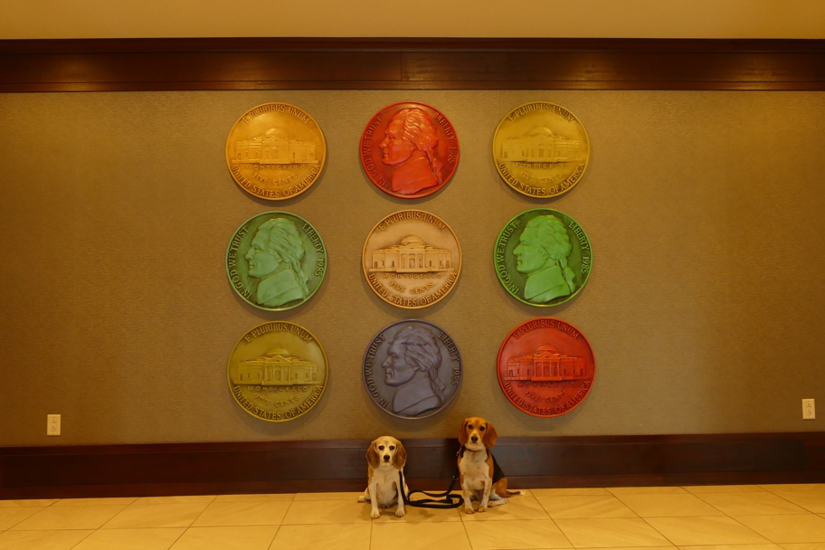

<--Previous Up Next-->

Thomas Jefferson's home, Monticello (which we had already visited on a trip without dogs many years ago) is just outside Charlottesville, and he founded the University of Virginia there.
Charlottesville Halley Beagle Virginia Wallace Beagle